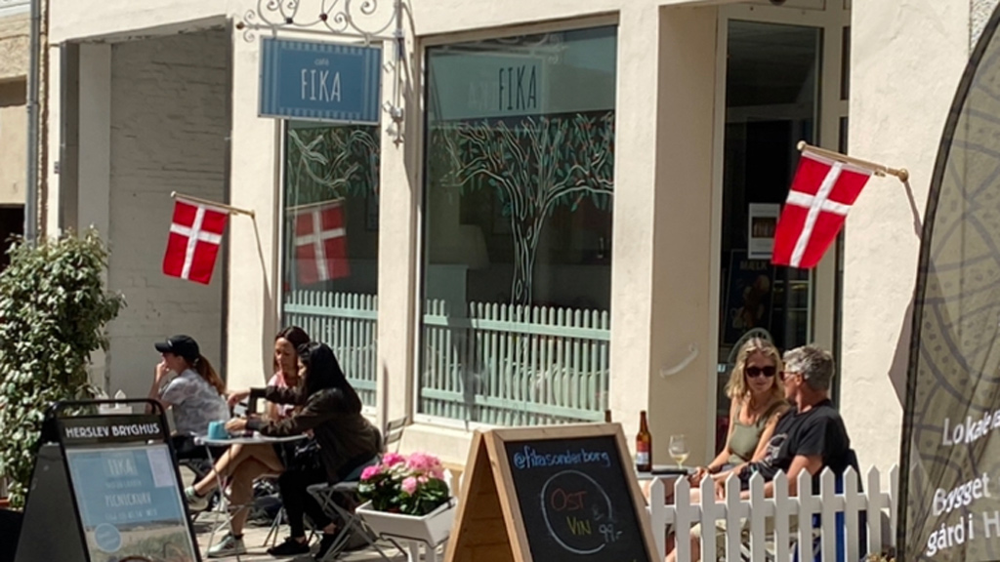
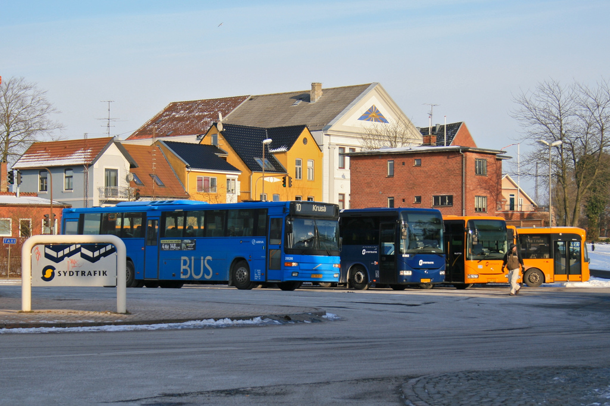
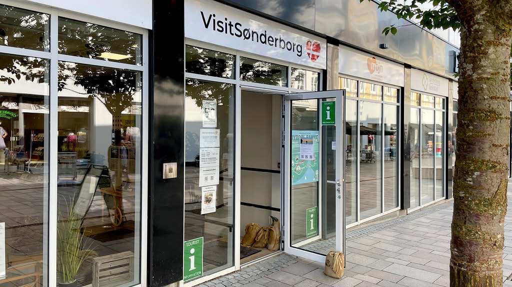

Services in Sønderborg
Sønderborg offers many helpful services for visitors and locals. Here you can find information about accommodation, restaurants, transportation and local facilities in the city.
Accommodation

Sønderborg has a variety of places to stay, from modern hotels to small bed & breakfast houses. Many locations offer beautiful views of the harbour and coastline.
- Hotels near the harbour
- Bed & Breakfasts on Als island
- Camping areas and cabins
Restaurants & Cafés
The city has many great places to eat. You can find Danish food, seafood, international restaurants, coffee shops and bakeries all around the city center.
- Seafood restaurants by the water
- Cozy cafés in the old town
- Fast food and take-away options
Transportation
Sønderborg is easy to travel around. There are bus connections, bike paths and taxis available. The city is also close to the airport.
- Local buses across Als island
- Taxi services
- Bicycle rentals
- Sønderborg Airport (SGD)
Tourist Information
The tourist information center can help with maps, tickets, guided tours and general questions about the city. It is located near the harbour.
- City maps and brochures
- Help with sightseeing plans
- Information about local events